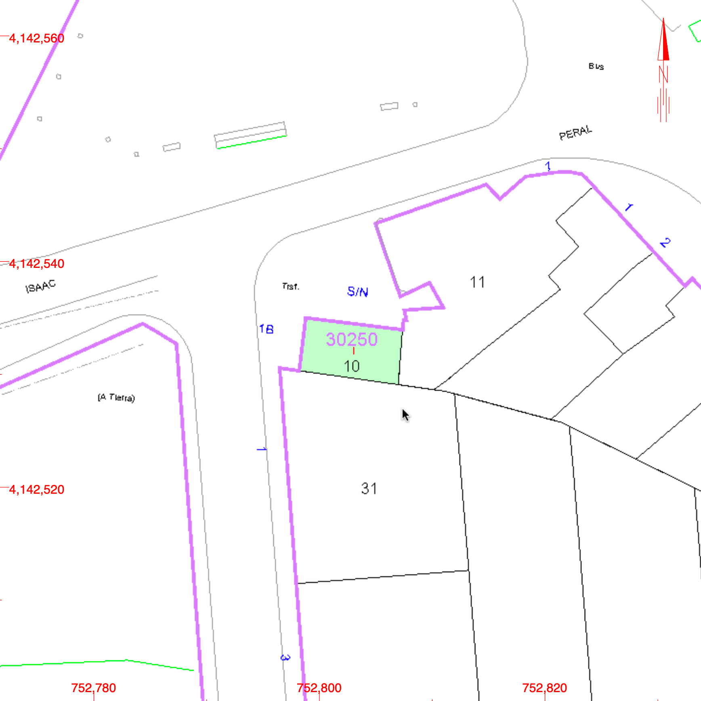
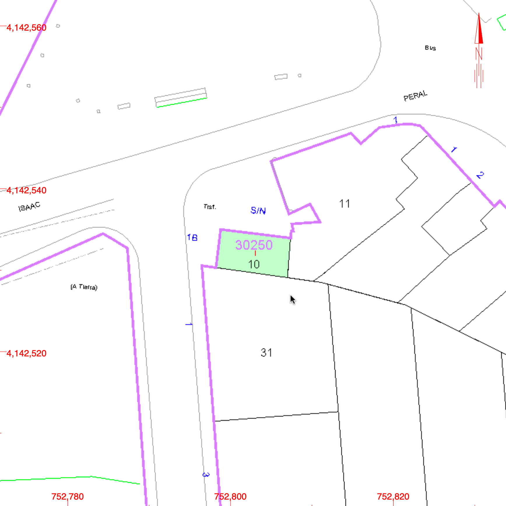

Transformación de un Centro de Transformación. Sevilla. 2019. Actualmente en estudio
¿Qué es Patrimonio? Responder a esta cuestión puede hacerse de manera rápida, inconsciente e irreflexiva o llevar más tiempo.
La presente propuesta se sustenta en la premisa «la Arquitectura transformada debe ser el gran avance de nuestro tiempo»: el reciclaje, la reutilización y el respeto patrimonial; no en términos “arqueológicos”, es decir, exclusivamente contemplativos, de estudio, sino en términos de recuperación de estructuras existentes de valor susceptibles de albergar nuevos usos.
El error sería mayúsculo si consideráramos como Patrimonio solo la Iglesia de XXXXX; si determinásemos que solo edificios del calibre del Palacio de San Telmo deben ser recuperados. Existe, parafraseando a la generación del 98, una «Intra-arquitectura» de calidad y con potencial. Es aquella que se sale del foco y, sin embargo por su presencia en número, es proporcionalmente más importante que las «arquitecturas estrella» y que constituye y construye nuestro patrimonio real, el cotidiano y por lo tanto es determinante en nuestra manera de vivir, aún cuando no seamos conscientes de ello...
Por ello no solo es merecedora de trato sino es imperioso su re-descubrimiento mediante la recuperación. Y no hay mejor manera de recuperar una estructura existente que dotándola de un nuevo uso, devolviéndola así a la actualidad asegurándose su mantenimiento y con ello su pervivencia.
Un Centro de Transformación en un edificio singular que, sin tener ninguna aspiración estética y sí funcional marcaba en otro tiempo un hito en el entorno habitualmente poco colonizado donde se insertaba. Hoy resiste el acoso vecinal sin haber perdido su condición singular, incorporando su potencial para escribir su futuro.
 
